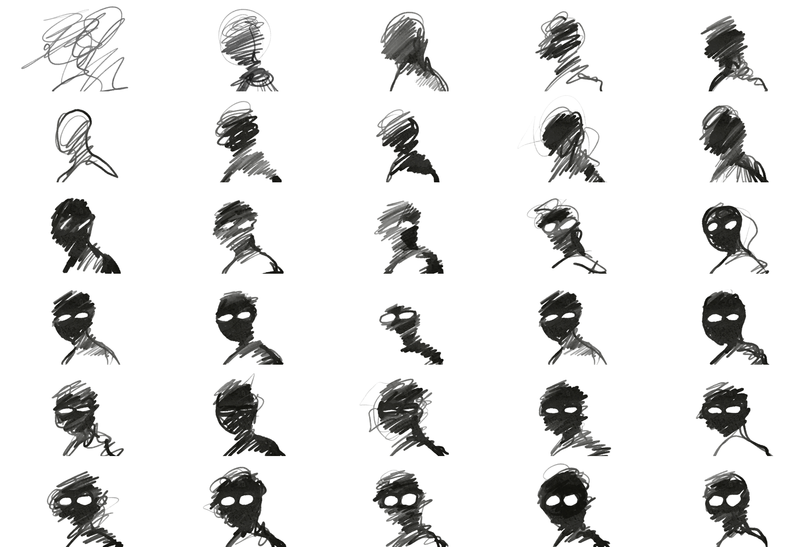

Going in Circles
29 April 2023 | Procreate / After Effects, HD (1920 x 1080 px), 00:01:00
In this animation, I explored circles and loops in an abstract, mindscape-like context. I used flowing and circular imagery throughout the entire film, playing around with ideas like unravelling, rippling, flipping, zooming, collecting, melting. Anything I could do to circles, I tried it.
The soundtrack was also carefully composed to align with the concept. The main chord progression repeats, gradually becoming more complex and experimental as the visuals similarly evolve. But the soundtrack does not come to an end. Rather, the last note feels like it should lead somewhere, leaving the viewer hanging in suspense.
But why? Because the entire animation is a perfect loop. (Get it?)
Various sketches and storyboards.
The subject of the film is subjective. The ceaselessness of life? Repeition and cycles and transformation? The insignificance of human existence? Pretty pixels and pretty pitches? You tell me.
When I released the animation, some people thought it was incredibly sad. And some people thought it was emotionally profound, introspection-inducing, ponderous—but not necessarily sad.
Ultimately, I am very proud of this piece. It's something I can return to, again, and again,
and again,
and again.
